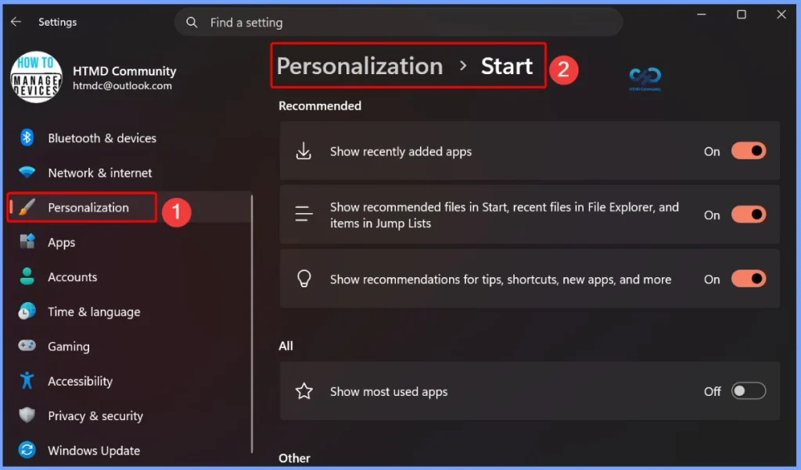
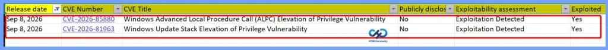
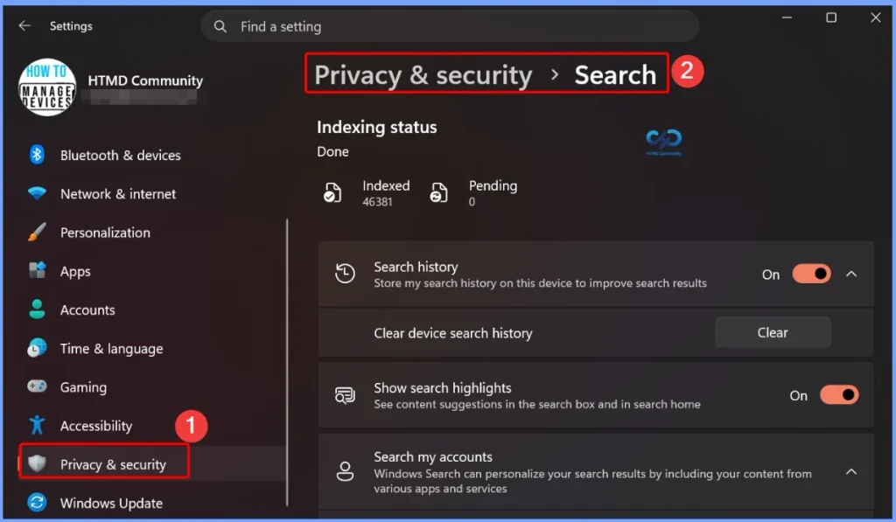
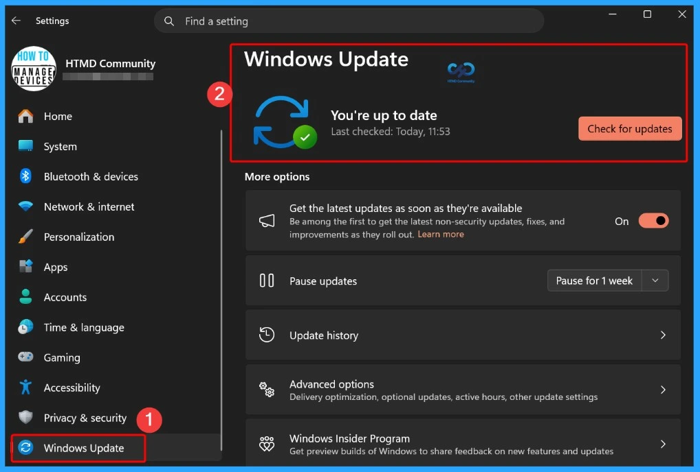
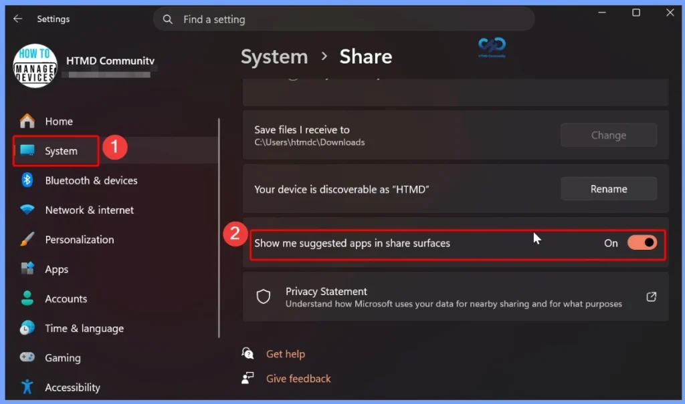
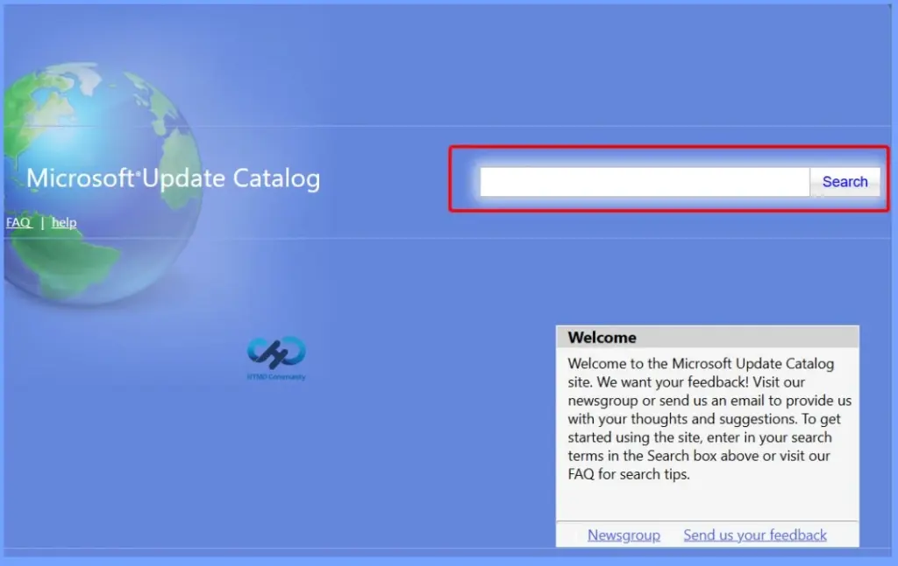

Key Takeaways
- CVE-2026-85880: Windows ALPC elevation-of-privilege vulnerability with exploitation detected.
- CVE-2026-81963: Windows Update Stack elevation-of-privilege vulnerability with exploitation detected.
- Taskbar Customisation – Move the taskbar to the top, bottom, left, or right and use the new smaller taskbar option.
- Start Menu Improvements – Choose Small or Large Start menu sizes, rename Recommended > Recent, and hide your name/profile picture.
- Windows Search Enhancements – Simplified Search, clearer result sources, control over web/Store suggestions, and automatic indexing of frequently used folders.
- Administrator Protection & Security – Introduces Administrator Protection, process isolation for Microsoft Execution Containers, agentic process tagging, and standalone ML-KEM support for post-quantum TLS.
- WMIC Removal – WMIC is removed from Windows 11 24H2 and 25H2 starting August 2026, while WMI remains supported.
Windows 11 KB5124008 KB5122880 September 2026 Patch and 2 Zero Day Vulnerabilities and 973 Flaws! The September 2026 Windows 11 update begins rolling out Administrator Protection, which helps secure administrator privileges by using just-in-time elevation and profile separation. The feature is designed to strengthen protection against elevation-of-privilege attacks. It is disabled by default and can be enabled through Microsoft Intune using OMA-URI or Group Policy.
Table of Content
Windows 11 KB5124008 KB5122880 Sepetember 2026 Patch and 2 Zero Day Vulnerabilities and 973 Flaws
The September 2026 Windows 11 patch brings a more customizable Start menu, allowing users to choose Small, Large, or Automatic sizing, rename Recommended to Recent, and hide their name and profile picture. The redesigned Start settings page also adds section-level toggles, giving users independent control over displaying Pinned, Recommended, and All sections.

2 Zero Day Vulnerabilities and 973 Flaws
The September 8, 2026 security update addresses two Windows vulnerabilities that are particularly important because exploitation has been detected. CVE-2026-85880 affects Windows Advanced Local Procedure Call (ALPC) and can allow elevation of privileges, while CVE-2026-81963 affects the Windows Update Stack and can also be used for privilege escalation. Both vulnerabilities were not publicly disclosed, but Microsoft has confirmed that they are actively being exploited, making them high-priority updates for Windows administrators.
| Release Date | CVE Number | CVE Title | Publicly disclosed | Exploitability assessment | Exploited |
|---|---|---|---|---|---|
| Sep 8, 2026 | CVE-2026-85880 | Windows Advanced Local Procedure Call (ALPC) Elevation of Privilege Vulnerability | No | Exploitation Detected | Yes |
| Sep 8, 2026 | CVE-2026-81963 | Windows Update Stack Elevation of Privilege Vulnerability | No | Exploitation Detected | Yes |

Windows 11 KB5124008 KB5122880 September 2026 Patch
The September 2026 Windows 11 patch brings several improvements to Windows Search, including a simplified Search home for quicker access to recent searches, clearer identification of result sources such as apps, settings, files, web results, and Microsoft Store suggestions, and a new setting to control whether web and Store suggestions appear alongside local results.
| Windows 11 26H1 | Windows 11 25H2 and 24H2 | Windows 11 23H2 |
|---|---|---|
| KB5124012 | KB5124008 | KB5122880 |

Updated Version of Windows 11 after Installing KB5124008 KB5122880 September 2025 Patch
The September 8, 2026 Windows 11 updates include different KB numbers and OS builds for each supported version. Windows 11 25H2 and 24H2 receive KB5124008, with OS Builds 26200.9445 and 26100.9445. Windows 11 23H2 receives KB5122880 (OS Build 22621.7582), while Windows 11 26H1 receives KB5124012 (OS Build 28000.2954).
- Windows 11 version 25h2 and 24h2 – September 8, 2026—KB5124008 (OS Builds 26200.9445 and 26100.9445)
- More Details on Windows 11 version Numbers: Windows 11 Version Numbers Build Numbers Major Minor Build Rev.
- Windows 11 Version 23h2 – September 8, 2026—KB5122880 (OS Build 22621.7582)
- Windows 11 Version 26h1 – September 8, 2026—KB5124012 (OS Build 28000.2954)

Windows 11 Features and New Improvements – KB5124008 KB5122880
The September 2026 Windows 11 patch improves File Explorer by making File Explorer Home launch faster and feel more responsive. The Recommended section also now supports touch scrolling, making it easier to browse through files in the carousel.
The September 2026 Windows 11 patch enhances Windows Share for users signed in with a work or school account. Users can now discover and install relevant apps directly from the Share window, making it easier to access apps that support sharing. This feature can be managed through Settings > System > Share > Show suggested apps in share surfaces.
| New Improvements | Details |
|---|---|
| Taskbar position | Choose to place the taskbar at the bottom, top, left, or right of the screen. Most customization settings continue to work in all positions. |
| Smaller taskbar | A new Small option reduces taskbar icon size and height, helping maximize screen space on smaller devices. |
| Taskbar settings | The Taskbar behaviors section is now expanded by default, making customization options easier to discover. |
| Start menu size | Choose between Small, Large, or Automatic (default). Go to Settings > Personalize > Start > Start menu size. |
| Recent section | The Recommended section is renamed Recent in the Start menu and Settings. |
| Hide name and profile picture | You can hide your name and profile picture from Start. Go to Settings > Personalize > Start > Hide your name and profile picture on Start. |
| Start menu settings | Additional Start menu customization options are available under Settings > Personalize > Start. |
| Windows Search – Simplified Search home | Search home is streamlined to reduce visual clutter and provide quicker access to recent searches. |
| Clearer result sources | Results now clearly indicate whether they come from an app, setting, file, web, or Microsoft Store, making it easier to know what you’ll open. |
| Web & Store suggestions | A new setting lets you choose whether web and Microsoft Store suggestions appear alongside local results. Go to Settings > Privacy & Security > Search. |
| Automatic folder indexing | Windows automatically indexes your most-used folders so their files appear in future searches. Manage this at Settings > Privacy & Security > Search > Automatically find additional relevant locations. |
| File Explorer Home | File Explorer Home now launches faster and more responsively. |
| Recommended section | The Recommended section on Home now supports touch scrolling, making it easier to browse files in the carousel. |
| General design | Updated progress indicators provide a more consistent and modern experience during startup, sign-in, restart, shutdown, and update installation. |
| Windows Share | Users signed in with a work or school account can discover and install relevant apps directly from the Share window. Manage this under Settings > System > Share > Show suggested apps in share surfaces. |
| Administrator Protection | Helps protect administrators from elevation-of-privilege attacks by providing just-in-time administrative privileges and profile separation. It is off by default and can be enabled through Microsoft Intune (OMA-URI) or Group Policy. |
| Multiple desktops | Switching between virtual desktops is now smoother and more responsive. |
| Display & Graphics | Improves reliability when navigating and interacting with Settings > System > Display. |
| Brightness settings | Improves the persistence of previous brightness settings after Energy Saver turns off. |
| Task Manager | Improves the reliability of displaying app history information in Task Manager. |
| Windows Setup | Streamlines selecting a secondary keyboard during Windows setup, making it easier to skip when unnecessary. |
| Get Started app | Adds new App install, Site pinning, and Theme pages to help personalize devices and discover features. |
| Windows Update | PCs manually put to sleep now return to sleep after an update, even when automatic sleep is set to Never. |
| App updates | Participating apps can coordinate updates with Windows Update for improved scheduling and a more streamlined experience. |
| Microsoft Store | Adds support for in-app purchases in packaged WinUI 3 apps that require elevation through Microsoft’s commerce platform. |
| Windows Autopilot device preparation | Device association is now generally available, helping organizations identify trusted devices, apply device-targeted policies, enroll corporate devices, and customize OOBE. |
| Microsoft Execution Containers | Introduces Process Isolation for MXC, providing a lightweight boundary for workloads such as coding agents and model-generated code while restricting access to system resources based on policy. |
| Agentic processes | Adds preview support for tagging agentic processes with an agent identifier that Windows protects and passes to child processes and Web Account Manager authentication requests. |
| Cryptography | ML-KEM can now be used as a standalone post-quantum algorithm for TLS key exchange, alongside previously supported hybrid groups. |
| Network | Improves VPN process resiliency and recovery and enhances netsh wlan show wlanreport output for Japanese users. |
| Input | Improves Japanese IME reliability and the persistence of voice typing settings for automatic punctuation and the launcher. |
| WMIC | Starting in August 2026, Windows 11 versions 24H2 and 25H2 no longer include the WMIC utility. WMI remains supported. |

Intune Windows 11 KB5124008 KB5122880 Deployment
You can use Microsoft Intune to deploy the September 2026 Windows cumulative update without creating a new update policy every month. Intune manages monthly quality updates through existing Windows Quality Update policies. If some devices haven’t received the September 2026 update, you can accelerate deployment by creating or updating a Windows Quality Update profile in the Intune admin center. Go to Devices > Manage Updates > Windows Updates > Quality Updates to manage the update deployment.
- In the Intune admin center, go to Devices > Manage Updates > Windows Updates > Quality Updates
Read More – Software Update Patching Options with Intune Setup Guide
More Details on Zero Day Out Of Band Patch Deployment Using Intune MEM Expedite Best Option and Intune Reporting Issue: Expedite Windows Security Patch Deployment.

SCCM Windows 11 KB5124008 KB5122880 Deployment
You can deploy the September 2026 Windows 11 cumulative update using SCCM, Windows Server Update Services (WSUS), or Microsoft Intune. In SCCM, start a WSUS synchronization from the Software Library to retrieve the latest updates.
After the sync completes, search for the September 2026 cumulative update using its KB number or by searching for “07-2026 Cumulative Update for Windows 11“. Once identified, deploy the update through your standard monthly patching process to ensure all managed devices receive the latest security and quality improvements.
Direct Download Links for Windows 11 KB5124008 KB5122880
You can manually download the September 2026 Windows 11 cumulative update from the Microsoft Update Catalog. Simply search for the September 2026 cumulative update or its KB number, then download the correct package for your Windows version. This method is useful for manually installing the update on individual devices or on systems that are not managed through Microsoft Intune, SCCM, or WSUS.
| Cumulative Update for Windows 11 | Products | Size | Direct Download |
|---|---|---|---|
| 2026-01 Cumulative Update for Windows 11, version 25H2 for x64-based Systems(KB5124008) | Windows 11 25H2 | 4934.9 MB | Download |
| 2026-01 Cumulative Update for Windows 11 Version 24H2 for x64-based Systems (KB5124008) | Windows 11 24H2 | 4934.9 MB | Download |
| 2026-01 Cumulative Update for Windows 11 Version 23H2 for x64-based Systems (KB5122880) | Windows 11 23H2 | 1113.7 MB | Download |

Resources
September 8, 2026—KB5122880 (OS Build 22621.7582) | Microsoft Support
Need Further Assistance or Have Technical Questions?
Join the LinkedIn Page and Telegram group to get the latest step-by-step guides and news updates. Join our Meetup Page to participate in User group meetings. Also, join the WhatsApp Community and the Whatsapp channel to get the latest news on Microsoft Technologies. We are there on Reddit as well.
Author
Anoop C Nair is Workplace Technology solution architect with 25+ years of experience in global enterprise organizations such as JP Morgan, Capgemini, etc. He is Microsoft Certified Trainer. Microsoft MVP from 2015 onwards for consecutive 11 years! He also conducts Intune and modern workplace tech training for enterprise organizations. He is Blogger, Speaker, and Founder of HTMD Community and HTMD Conference. His focus is on Device Management technologies such as Intune, Windows, Cloud PC. He writes about technologies like Intune, SCCM, Windows, Cloud PC, Windows, Entra, Microsoft Security.